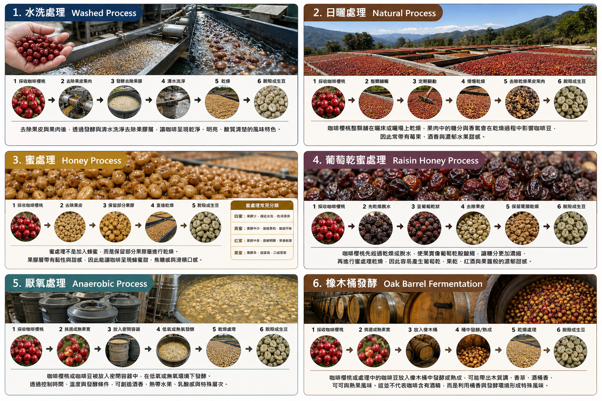
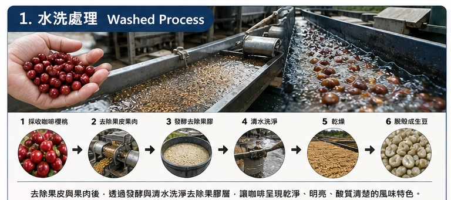
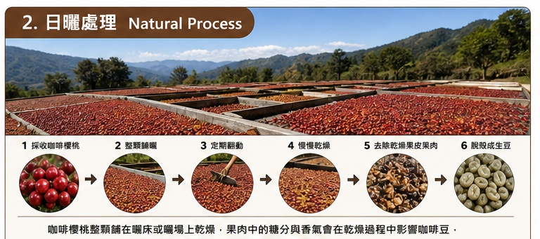
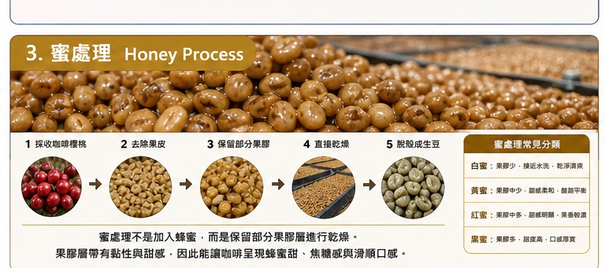
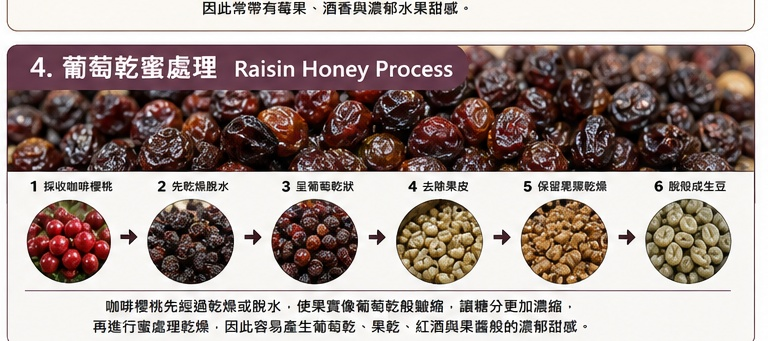
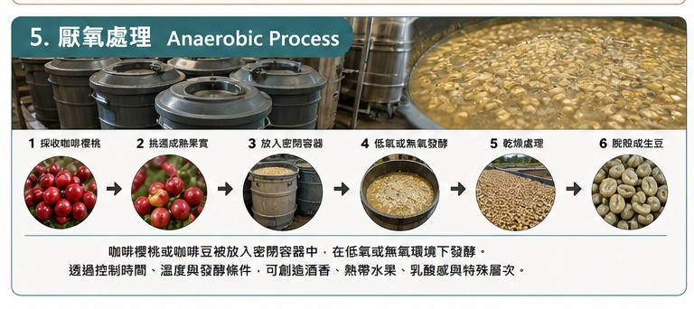
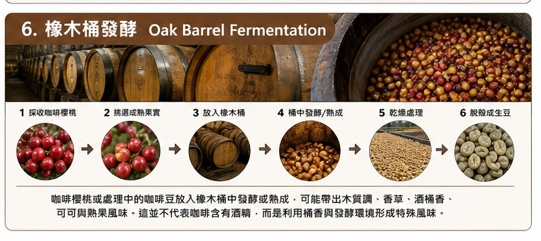

一、什麼是咖啡處理法？
咖啡豆其實是咖啡果實裡面的種子。咖啡果實採收後，必須經過處理， 把果皮、果肉、果膠層去除，再乾燥成生豆。不同處理方式會影響咖啡的 香氣、甜感、酸質、口感與風味乾淨度。
常見的咖啡處理法包含水洗處理、日曬處理、蜜處理與葡萄乾蜜處理。 近年精品咖啡也常見厭氧處理、橡木桶發酵等特殊處理方式， 用來創造更明顯的水果香、酒香、發酵感與特殊層次。

水洗處理
乾淨、明亮、酸質清楚，最能表現產區與品種特色。
日曬處理
果香濃郁、甜感高，常有莓果、酒香、熱帶水果風味。
蜜處理
介於水洗與日曬之間，甜感佳、口感滑順、酸甜平衡。
葡萄乾蜜處理
糖分濃縮，果乾感、酒香與厚實度更明顯。
厭氧處理
在低氧或無氧環境中發酵，香氣明顯、層次豐富。
橡木桶發酵
利用橡木桶發酵或熟成，帶出木質、香草、酒香與可可調性。
二、水洗處理 Washed Process
水洗處理是最常見、也最能表現咖啡豆本身產區與品種特色的方式。 它的重點在於去除果肉與果膠，讓咖啡風味呈現得更乾淨。
處理流程

風味特色
水洗咖啡通常風味比較乾淨、明亮、清爽。酸質會比較明顯， 像檸檬、柑橘、青蘋果、花香、茶感等風味比較容易被表現出來。
三、日曬處理 Natural Process
日曬處理是較傳統的咖啡處理方式。咖啡櫻桃採收後，不先去皮， 而是整顆果實直接乾燥。果肉中的糖分與香氣會在乾燥過程中慢慢影響咖啡豆。
處理流程

風味特色
日曬咖啡通常會有較明顯的水果香、甜感、酒香或發酵感。 常見風味包含草莓、藍莓、葡萄、芒果、鳳梨、酒釀、水果乾等。
四、蜜處理 Honey Process
蜜處理不是加蜂蜜，而是因為咖啡豆保留果膠層乾燥時， 表面會黏黏的，像蜂蜜一樣，所以稱為蜜處理。
處理流程

風味特色
蜜處理介於水洗與日曬之間。它比水洗甜感更好、口感更滑順； 但又比日曬乾淨，不會有太強烈的發酵感。
蜜處理常見分類
| 類型 | 果膠保留程度 | 風味特色 |
|---|---|---|
| 白蜜 | 少 | 接近水洗，乾淨、清爽 |
| 黃蜜 | 中低 | 甜感柔和，酸甜平衡 |
| 紅蜜 | 中高 | 甜感明顯，果香較濃 |
| 黑蜜 | 高 | 甜度高，口感厚實，發酵感較強 |
五、葡萄乾蜜處理 Raisin Honey Process
葡萄乾蜜處理可以理解為蜜處理的進階版。這裡的「葡萄乾」不是加入葡萄乾， 而是咖啡櫻桃在處理前，先經過一段時間的乾燥或脫水， 讓果實像葡萄乾一樣皺縮，使糖分更加濃縮。
處理流程

風味特色
葡萄乾蜜處理通常甜感非常明顯，口感厚實， 常見風味包含葡萄乾、紅酒、莓果醬、果乾、熱帶水果、酒香與熟成水果。
六、厭氧處理 Anaerobic Process
厭氧處理是近年精品咖啡中很受歡迎的特殊處理方式。 「厭氧」的意思是讓咖啡櫻桃或去皮後的咖啡豆， 在低氧或接近無氧的環境中進行發酵。
常見做法是把咖啡櫻桃放入密閉桶、發酵槽或特殊容器中， 控制溫度、時間、壓力與發酵條件，讓咖啡產生更明顯的香氣與風味層次。
處理流程

風味特色
厭氧處理的咖啡通常香氣強烈，風味辨識度高， 常見有酒香、鳳梨、芒果、百香果、莓果、乳酸感、優格感、果汁感或發酵甜感。
七、橡木桶發酵 Oak Barrel Fermentation
橡木桶發酵是特殊處理法的一種，通常會把咖啡櫻桃或處理中的咖啡豆， 放入橡木桶中進行發酵或熟成。
橡木桶原本常用於紅酒、威士忌、白蘭地等酒類熟成。 咖啡在橡木桶中發酵時，可能會吸收木質、香草、酒香或熟成感。 但這不代表咖啡含有酒精，也不是直接加入酒，而是利用桶子的香氣與發酵環境創造特殊風味。
處理流程

風味特色
橡木桶發酵的咖啡常見風味包含香草、木質調、可可、威士忌香、紅酒感、 熟果、焦糖、香料、葡萄乾與厚實甜感。
八、六種處理法風味比較
| 項目 | 水洗 | 日曬 | 蜜處理 | 葡萄乾蜜處理 | 厭氧處理 | 橡木桶發酵 |
|---|---|---|---|---|---|---|
| 乾淨度 | 最高 | 中等 | 高 | 中高 | 中等至中高 | 中等 |
| 甜感 | 中等 | 高 | 高 | 很高 | 高 | 高 |
| 酸質 | 明亮清楚 | 較圓潤 | 酸甜平衡 | 圓潤濃縮 | 明顯且特殊 | 較圓潤 |
| 果香 | 清新果香 | 濃郁果香 | 熟果甜香 | 果乾、酒香 | 熱帶水果、酒香 | 熟果、葡萄乾 |
| 口感 | 清爽 | 厚實 | 滑順 | 濃稠厚實 | 飽滿、有層次 | 厚實、熟成感 |
| 發酵感 | 低 | 中高 | 中 | 中高 | 高 | 中高 |
| 常見風味 | 花香、柑橘、茶感 | 莓果、酒香、熱帶水果 | 蜂蜜、焦糖、熟果 | 葡萄乾、果醬、紅酒感 | 鳳梨、芒果、百香果、優格感 | 香草、木質、可可、酒桶香 |
九、課程講解建議
咖啡處理法就像料理方式一樣，同樣的咖啡豆，經過不同處理， 會產生不同個性。
水洗像是清蒸，保留食材本身的乾淨與原味。
日曬像是水果乾燥熟成，香氣濃郁、甜感更強。
蜜處理介於兩者之間，既有水洗的乾淨，也有日曬的甜感。
葡萄乾蜜處理像是把果實糖分先濃縮，所以風味更甜、更厚實。
厭氧處理像是在密閉空間中控制發酵，讓香氣與水果感更集中。
橡木桶發酵像是讓咖啡進入酒桶熟成環境，產生木質、香草與酒香調性。
簡單記憶法
| 處理法 | 一句話記憶 |
|---|---|
| 水洗 | 乾淨明亮，最能喝出產區特色 |
| 日曬 | 果香濃郁，甜感與發酵香明顯 |
| 蜜處理 | 酸甜平衡，甜感好、口感滑順 |
| 葡萄乾蜜處理 | 糖分濃縮，果乾酒香與厚實感強 |
| 厭氧處理 | 密閉發酵，香氣強烈、層次特殊 |
| 橡木桶發酵 | 桶香熟成，木質、香草與酒香明顯 |
品飲引導
- 喝水洗咖啡時，可以注意它的酸質、花香與乾淨度。
- 喝日曬咖啡時，可以注意它的水果香、甜感與酒香。
- 喝蜜處理咖啡時，可以注意它的滑順口感、蜂蜜甜與酸甜平衡。
- 喝葡萄乾蜜處理咖啡時，可以注意它的果乾香、濃郁甜感與厚實度。
- 喝厭氧處理咖啡時，可以注意它的特殊發酵香、熱帶水果與層次變化。
- 喝橡木桶發酵咖啡時，可以注意它的木質調、香草感、酒桶香與熟成感。